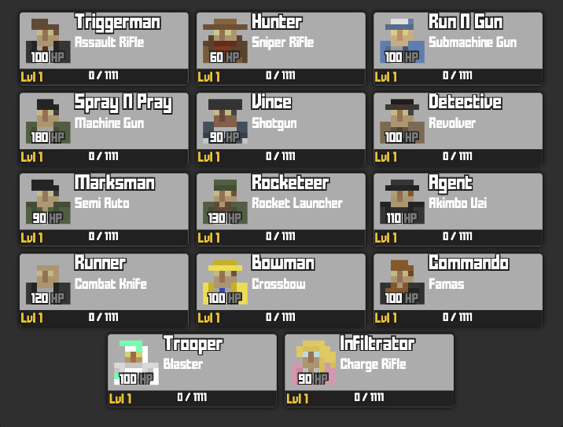
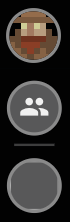
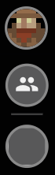

Krunker - Knowledge Base
Classes
Classes may differ on each platform
Triggerman
The Triggerman is the default class for all players that start the game. It’s effective at all ranges, balanced, it’s the easiest class to use, and very popular among beginners and experts alike.
He’s equipped with the Assault Rifle and can equip secondary weapons.
Hunter
The Hunter is one of the most popular and most played classes in the game currently, it has low health but is very effective at long range since it’s equipped with the Sniper Rifle.
Run n Gun
Run N Gun is designed for a fast-moving playstyle, with one of the fastest movement speeds in the game, and equipped with the SMG which has a very high fire rate but low damage output. It can also wall jump and wall grind.
Spray n Pray
Spray N’ Pray is essentially a tank class, which has the highest health but is also the slowest in the game. He has an LMG which holds the largest amount of ammunition. It’s also the only class that cannot jump on top of any objects without using the knife for extra mobility.
Vince
Vince is the only class with a real name, as opposed to the other classes.
His primary weapon is the Shotgun which is only effective at close range, however, this can be overcome with movement, using shotgun jumping.
The Detective
The Detective is a fast class effective at medium to long ranges due to the light weight of his weapon which is the Revolver, however, it has a slow rate of fire, but does incredible damage.
The Marksman
The Marksman is a balanced class with a Semi-Auto, which is very effective at medium range.
The Rocketeer
The Rocketeer is a heavy class, often easy to play but hard to master, with the second-highest health and the second-lowest speed in the game. However, it can increase its mobility and jump onto environmental objects by switching to a secondary weapon or melee.
Agent
The Agent is currently the only class that can wield two weapons at once, which are two Akimbo Uzis. Overall, it’s a very aggressive, fast-moving, short-ranged class that can wall jump and wall grind.
The Runner
The Runner is a very mobile class that uses a Knife. Mainly used in Parkour maps or runner-only combat custom games, but with the ability to do wall jumps and wall grinds, is also effective in close range in normal game modes. It can also throw knives, but the range is low.
Deagler
The Deagler is one of the two classes only playable in custom games, the other being The Survivor.
Its weapon is the Desert Eagle and the secondary weapon can only be unlocked at level 15.

Bowman
Bowman is a high-risk, high-reward class, with an emphasis on accuracy, timing, and reflexes. Its weapon, the Bow, can deal high damage and has the fastest reload speed in the game, but it only has one ammo.
The Commando
The Commando is a rifle class and its weapon is the FAMAS, a 3-bullet burst rifle, which is average at all ranges and doesn’t have any significant advantage. This class is often compared to Triggerman.
Trooper
The Trooper is a class effective at all ranges, its weapon is the Blaster whose fire rate is automatic, but very slow. He’s also able to wall jump but is unable to equip a secondary weapon.
The play style of the trooper is similar to that of the Triggerman and its strength comes from its ability to burst down enemies quickly.
The Survivor
The Survivor is one of the two classes only playable in custom games, the other being the Deagler, and introduces building mechanics into Krunker, as one can build blocks, walls, platforms, and stairs. The survivor class does not have a secondary weapon and its primary weapon is the Build Tool.
Infiltrator
The Infiltrator is a very high-risk, high-reward class similar to the Bowman. With a lower health of 90 HP compared to the normal 100 HP most other classes have, it has medium movement speed and she wields a unique weapon which is the Charge Rifle, that requires good tracking to be able to consistently farm kills.
Game Modes
In Krunker there are 25 game modes available to play and are divided into 3 categories, Public, Party and Community

Public Game Modes
They are the game modes on the official servers where you can earn KR and XP, have a 4-minute timer, and once it ends the winner is determined by their kills and deaths score, along with the other stats in the players’ profile. They can also be played on custom games.
Note: Profile stats won’t be affected unless you play until the end of the match, but leaving a game before the timer ends will count as a lost game.
Party Game Modes
The Party game modes work like Public Game Modes and one of them is available as the 4th option in the voting system.
Community Modes
These modes can be achieved by changing some settings and using special maps.
Voting System
The voting system allows players to select the game mode and map which they will be playing next. The 4th option is always a unique mode. (e.g. Party Game Modes)

Economy
Krunkies
Krunkies (KR) is the main in-game currency for Krunker which can be obtained in several ways, mainly by playing on public servers, where you gain 1 KR for every 100 points you score (up to 30 KR per round), people who have Krunker Premium get up to 40 KR per round.
The amount of Krunkies you have will appear on the top left of the screen.
Other ways to gain KR are:
- Completing Missions
- Through the Free KR spins
- Selling skins on the Market
- Purchase it with real money in the Shop
- Using a KR code
- Activating the Challenge Mode
Junk
Junk is another in-game currency that is used for crafting skins and will be next to your KR balance.
The best way to earn Junk is by completing the Missions, depending on the difficulty and time required, the amount varies. They can also be physically found in rotation maps, which can be collected and each will give you 0.01 junk or through quick selling. The Back to Skool Bundle also gives you 15 junk and many other rewards.
To use Junk, just go to the Shop tab in the main menu or your currency balance, on the top left, to enter the Junkyard. Here players can exchange Junk for cosmetics and skins, which can vary from Epic to Contraband rarity.

Market
Market may not be available on all platforms
The Market can be accessed through the Hub tab on the left main menu and players must be level 20.
It’s possible to purchase or sell in-game items at any price, using KR.

Quick Selling
Players can sell skins to the game in exchange for KR or Junk but the price is set by rarity.
Note: Quick selling is not reversible.
Trading
Allows players with an account level of 20, to exchange in-game items, such as skins and cosmetics with each other. A player can select up to 5 items and visit another Player’s Profile to submit an offer, although players with Premium have this cap raised to 15.
For every trade there’s an extra amount of KR applied as tax and non-tradable items show a lock icon.

Shop Purchases
In the Shop you can buy KR and bundles that also give you items and cosmetics.
Unfortunately due to Steam’s Terms of Service, bundles can’t be purchased through the Steam client.


Premium
Krunker Premium is a subscription that players can buy, that gives many bonuses in the game such as a golden badge, the ability to host 16 player rooms, a name change perk, and many others.


Battle Pass
The Battle Pass can be purchased in the Shop and rewards the player with points, skins, and tickets for playing the game and completing specific missions.


Battle Pass Points
The Battle Pass Points that players can earn have a daily cap that increases every day
Tickets
The Tickets earned in the Battle Pass can be redeemed by skins, on the Prize Wheels tab in the Shop

Free Kr Spins
Free KR Spins are available once per hour, for level 5 players and above and you can win free KR as a reward for spinning a wheel. It will appear in your game as a pop-up after playing a game or in the Shop. You can also find them in some custom maps.

Game Features
Hub
The Krunker Hub’s objective is to connect the community of krunker.io, and the place where you can access the feed from people you follow, hot topics, global statistics, giveaways, and the clan’s feed.

You can also access the market, leaderboards, the list of games and mods, and the item list. and more.


Clans Leaderboards on December 2022
Item list on December 2022
Clans
Once an account reaches level 10, it can request to join clans. On your profile, underneath your username, there’s the clan tab where you can create your own or apply for an existing clan, by typing its name or searching from the list.
Players cannot join another clan if they are already in one and to create a new one, a player must reach level 20, enter a valid clan name up to 4 characters long and click on the blue Create button.

Clan Bank
Only the clan Commander has access to the Clan Bank, which is a pool of Krunkies that is provided through member donations (with a 10% deposit fee).

Missions
The player must be Level 15 to be able to access the Missions, which are a set of tasks that a player can complete to earn KR while playing. Abandoning a match will result in the loss of challenge progress.
The rewards and difficulty of completing the challenges are increased, as you progress and they can only be done in normal public games, Custom Games won’t count.
Missions give KR, Junk, and cosmetic rewards and are divided into the following categories:
Ranked - Available on ranked matchmaking only
Daily - Vary daily in type and rewards
Map - Consists of 90 combined challenges from every map
Weapon - Consists of 187 combined challenges for every weapon
Nightmare - Difficult challenges that provide big rewards
Special - Only available for a limited time on special event
Challenge Mode
Challenge mode can only be turned on after reaching level 30 and is an optional setting that can increase the game’s difficulty in return for better rewards. This will halve the player’s maximum health and disable automatic health regeneration but it will increase the KR awarded at the end of the game by 1.5x and also raise the cap from 30 to 45 KR, for standard accounts.
FAQs
Where to play Krunker?
Krunker can be played on the computer and mobile devices, on the Krunker and FRVR websites, on the official launcher that you can download, and on Steam, Microsoft, and Facebook. On mobile, you can play at Google Play Store, App Store, and Samsung Instant.
What are the game requirements?
Krunker was made to be accessible to all players independently of setup or device, it’s a lightweight game that can be run on any system, even if it’s low-end.
Can I play with the controller?
Yes, if you’re on Windows just plug and play your wired or wireless-compatible controller and it automatically recognizes the device.
Does Krunker have crossplay?
Yes, players from mobile platforms will be able to be matched on the same servers.
How to invite friends?
To add friends to your list you must follow each other, which can be done on the players’ profile, after that to see the list of friends head over to the Hub which is available on the top left menu, below your account icon.
 

How to host a custom game?
Custom games are the only way to play on maps created by the Community in the Map Editor, which is an important part of Krunker, and it also allows you to check the numerous Game Modes that exist in the game. On the main page, press the Host Game icon at the bottom, choose the server type, and the map in which you want to play, configure the game settings and the server options, then press Start Game. To invite your friends press the Invite icon and send them the link.


How to join a game server?
On the main page, press the join icon to play a custom game via a link or through the Games tab on the left side menu.


How to get a verified account?
Only the developers can verify players and are usually given to people who contribute a lot within the community, they handpick players based on the criterion listed:
- Krunker Bunker Staff, Reddit Staff, Wiki Staff, or other types of staff for the game or community.
- Important content creators such as high-tier map makers, skin makers, or Twitch streamers/YouTubers who do a lot to advertise the game.
- Winners of map/skin competitions or giveaways.
- Professional Krunker players. (leaderboards/tournaments)
- Being an owner of a high-tier clan or discord server related to the game.
- Users who have significant contributions to the Krunker Translation Project.
How to earn a badge?
Dedicating a lot of time and effort to the map-making community or creating excellent maps will make you eligible for a badge. Account badges are given out by the game developers at their discretion, so it’s up to the developers to assign the badge to you.
How to become a partner?
You can apply to become a Partner once your game hits 50,000 Plays in 30 days. After that just apply through your profile, in the partner tab.
What’s a KR Code and how to redeem it?
It’s a giveaway code with KR currency, awarded to you by watching official Krunker streams or Krunker-sponsored streamers.
What’s the KPD?
The Krunker Police Department (KPD) is a player-oriented anti-cheat system where players can call a game moderator if they find a hacker in their lobby. They must see an offense to respond to it and they can hacker tag or ban a player’s IP, if they are caught hacking.
How to call the KPD to report a hacker?
The KPD can only be called by players at level 15, and there is a limit of 10 Calls per day to prevent abuse. Trust score now affects your ability to call KPD, so more calls can be made per day depending on your trust level.
You can call a moderator by pressing ALT, when in-game, and selecting the KPD icon next to the player’s name. KPD can be called in ranked matches that have a higher priority, and also take action on guest accounts. You can also file a hacker report in the Krunker Bunker Discord or the official Hacker Report Form when you have video proofs.

How to apply for the KPD?
To apply to the KPD players must be level 50 or above and have at least 50 helpful reports. To apply, press the police icon next to your username and you will be presented with an email address to apply and from which you will receive the KPD application form. Once accepted, pressing the logo will give you a list of all incoming calls.
How to report a scam?
To report any scam in Krunker, contact krunker@yendis.ch
How to recover a lost or hacked account?
For an account or password recovery, please contact recovery@yendis.ch
Community/Links
Community
Discord
Map/game making Community Discord
Reddit
Twitch
Youtube
Terms of Service
https://frvr.com/legal/krunker/#TermsofService